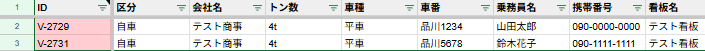

確認済み機能 12 / 29
01
入力補助
ID自動採番
🔵 自動
- B〜K列のどこかに入力すると、A列に「V-0001」のような番号が自動で付く
- 複数人が同時に入力しても番号は重複しない
💡 困ったときは
- IDが抜けている行がある場合は下記メニューで一括修正できる

02
入力補助
トン数正規化
🔵 自動
- D列（トン数）に「4t」「4トン」「4.0」などで入力しても「4」に自動変換される
- 操作は不要。どの書き方でも正しく集計される

03
入力補助
車番自動補完
🔵 自動
- F列（車番）に番号を入力すると、乗務員名・携帯番号・看板名・トン数などが自動で埋まる
- 車番は「101」のみ入力でOK（「大阪か101」まで入れなくてよい）
💡 ポイント
- 協力会社の車両など、同じ車番でも別の会社名を使う場合は「会社名」欄を先に入力してから車番を入れると補完されない（手動で入力できる）
💡 困ったときは
- 補完が抜けた行がある場合

04
入力補助
車種 全角→半角・大文字統一変換
🔵 自動
- E列（車種）に小文字「w」で入力しても、自動で大文字「W」に変わる
- 操作は不要

05
入力補助
時刻の正規化と日付合成
🔵 自動
- 時刻欄（誘導・積完・休憩・降完など）に「9:30」と入力するだけで、その日の日付と自動合成されて「7/24 9:30」形式になる
- 全角コロン「：」や全角数字も自動で変換される
⚠️ 注意
- 「19：40ｌ」のように数字以外の文字（英字など）が混じると変換されずそのまま保存される

06
入力補助
車番 全角→半角自動変換
🔵 自動
- F列（車番）に「１０１」など全角で入力しても「101」に自動変換される
- 操作は不要

07
自動計算
書式自動設定
🔵 自動
- 金額欄（売上・高速代など）は自動で「1,000」形式のカンマ区切りになる
- 時刻欄は自動で「7/24 9:30」形式になる
- 操作は不要。書式が崩れても入力し直すと自動で修復される

08
自動計算
請求高速 → 実費高速 コピー
🟠 オレンジ文字
🔵 自動
- T列（請求高速）に金額を入力すると、U列（実費高速）にオレンジ色で同じ値が自動コピーされる
- 実費が請求と同じ場合はそのままでOK（オレンジのまま自動処理される）
- 実費が異なる場合は U列を直接入力 → 黒字になり T列には追従しなくなる
- U列を削除（Delete）すると T列の値が再コピーされる
⚠️ 注意
- 実費が本当に0円の場合は空欄にせず「0」と入力すること（空欄のままにすると T列の値が再コピーされてしまう）

09
自動計算
合計高速代 自動計算
🔵 自動
- V列（合計高速）は自動計算列。入力は不要
- 請求 ＞ 実費 のとき黒字でプラス表示
- 請求 ＜ 実費 のとき赤字でマイナス表示
- 同額または両方空欄のときは空白（0は出さない）
⚠️ 注意
- V列に直接入力しようとすると自動で元に戻り「合計高速は自動計算列です」と表示される

10
自動計算
日付変更時の自動ソート
🔵 自動
- J列（日付）を変更すると自動で「日付の早い順 → 同じ日は乗務員名の五十音順」に並び替わる
- 並び替えで行の色やファイルのリンクがズレることはない
💡 手動でも実行できる

29
入力補助
日付への現在時刻付与
🔵 自動
- J列（日付）に「7/26」や「７/２６」など入力すると今年の正しい日付として保存される
- シートの表示は日付のみ（時刻は内部に保存）。アプリの一覧では日付＋時刻（例：7/26 14:35）で表示される
- 操作は不要

11
色表示
有休行の色付け
🔵 自動
- L列（積地）に「有休」と入力すると行全体が薄グレーになる
- SS開き直し（F5）後も自動で再適用される
- 操作は不要

27
データ取込
配車表・名簿 CSV/Excelの一括取込
📋 手順（全シート共通）
- メニュー「📥 データ読み込み（CSV）」→ 取込先（運行シート / 自車専属マスタ / マスタ（取引先））を選択
- 「📋 貼付シート作成」を押すと、専用の貼付用シートが自動生成される
- 取り込みたいデータ（Excelや他システムからコピー、ヘッダー行ごとコピーする）を貼付シートに貼り付ける
- 「▶ 貼付データ取込」を押すと、ヘッダー行の項目名を自動で読み取り、1行目にシステムの正式な列名が書き込まれる
- 内容を確認して「✅ この内容で確定・反映」を押すと、各シートにデータが追加される
- 取込後にメニュー「⚙️ システム設定・保守」→「📃 集計表再生成」を押すと集計表に反映される（運行シート取込時）
- 列の追加・ヘッダーを更新した場合は「🗂 シート再生成」を押すこと
自動マッピングの仕組み
- 「運賃」「売上金額」「貨物運賃」はすべて自動で「売上」として認識される
- 「ドライバー」「運転手」「乗務員」もすべて「乗務員名」として認識される（辞書による表記ゆれ吸収）
- ヘッダー名で判断できない列は、データの内容（電話番号形式・郵便番号形式・カタカナなど）で自動推定する
- 「住所1」「住所2」のように同じ列が複数ある場合は、列の並び順どおりに空白でつなげて1列に統合される。先に並んでいる列が先頭になる
- 売上・日付・高速代などの数値・日付列は統合しない（最後の列の値を採用）
各シートの取込ルール
- 運行シート：新規行として末尾に追記。車番・乗務員名があれば自車専属マスタから会社名・トン数・車種などを自動補完
- 自車専属マスタ：車番＋乗務員名が両方一致する行は上書き更新。一致なしは新規追記
- 取引先（マスタ）シート：新規行として追記。会社名・電話・FAX・郵便番号・住所・銀行情報・インボイス情報・入金条件など全項目に対応
⚠️ 注意事項
- 取込はすべて新規追加（運行・取引先）または上書き更新（自車専属マスタのみ、車番＋乗務員名一致時）。既存データの空欄だけ埋めるモードはない
- 取込前にデータの全項目を揃えておくこと。後から追記・補完する手段はないため、一回で必要な列をすべて含めた状態で取り込む
- 住所を住所1・住所2に分けている場合、貼り付ける前に列順を確認すること（住所1を左、住所2を右に並べる）
- ヘッダー行も含めてコピーすること。ヘッダー行がないと項目名を自動認識できない
- 貼付後に辞書v10が反映されていない場合は「🗂 シート再生成」を一度押してから再取込する
🧪 テストデータ
- 「🗂 シート再生成」を押すと「運行客テスト」シートが自動で作成される（既存の場合はスキップ）
- このシートは架空の運行データ（運行日・ドライバー・車番号・積込先・納品先・運賃・高速代など）が入ったサンプル。取込の動作確認に使える
- 内容をコピーして貼付シートに貼り付け、取込が正しく動くか確認する
今後の対応予定（未確認）
16 件
12
色表示
休み行の色付け
濃グレー
13
色表示
配車漏れ警告色
薄黄
14
色表示
資格期限アラート色（A列）
🔴🔵🟢
15
色表示
ID重複・車番不一致の警告
🔴 濃い赤
16
色表示
保護列の色
薄青グレー
17
色表示
色凡例メモの自動設定
18
警告・保護
時刻入力の順序チェック
19
警告・保護
ヘッダー行の自動復元
20
ID・車番の一括補完（手動）
21
手動の日付順並び替え
22
今月分の行一括生成
23
翌月分の行一括生成
24
前月分アーカイブ
25
帳票・送信
車番連絡のメール送信
26
帳票・送信
ファイル添付
28
インフラ
onEdit処理の高速化